减薄足端与外扩盖板，腿的粗细有主次；木腹、铜前躯、铁关节与夹口分材质。参考暮色甲虫大腹/小头/细足结构。
软件对照：左旧右新，相同相机与共同取景范围。以下所有软件模型均逐面采样实际PNG。
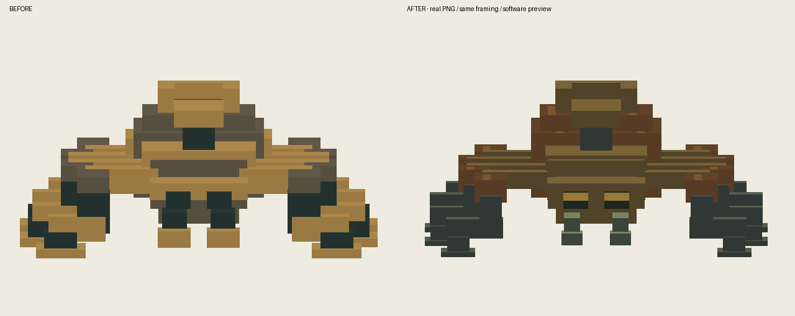
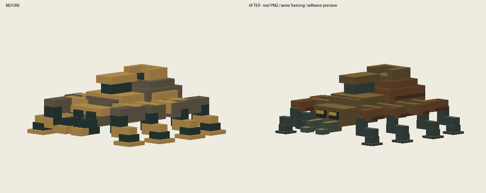
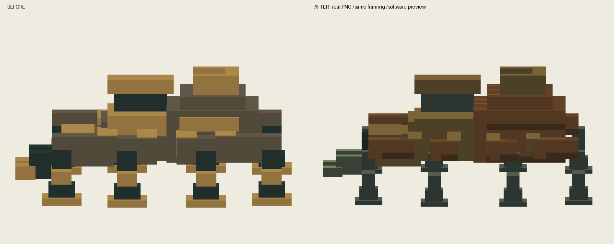
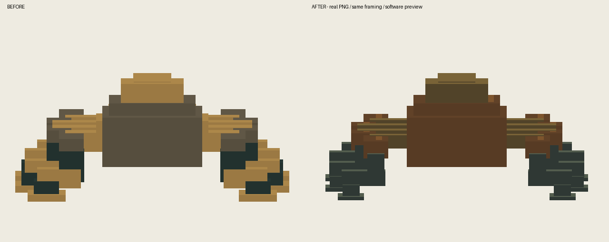
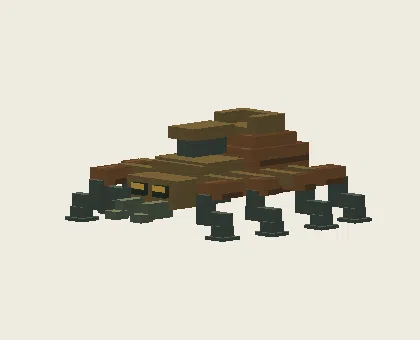
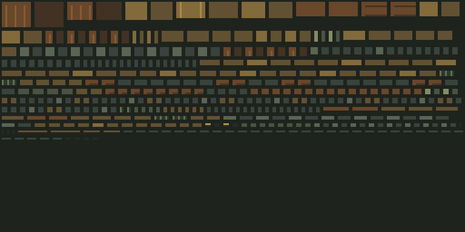
隔离静音测试存档；验证加载、原动作与重载，不代表自然战斗或多人验收。
24-bazu_digongzhu-front
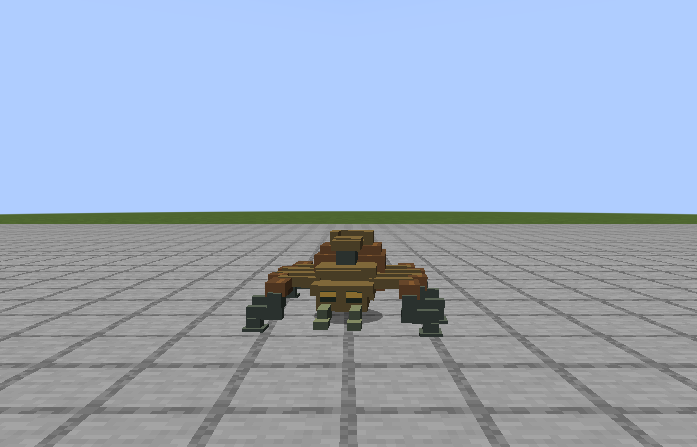
25-bazu_digongzhu-45
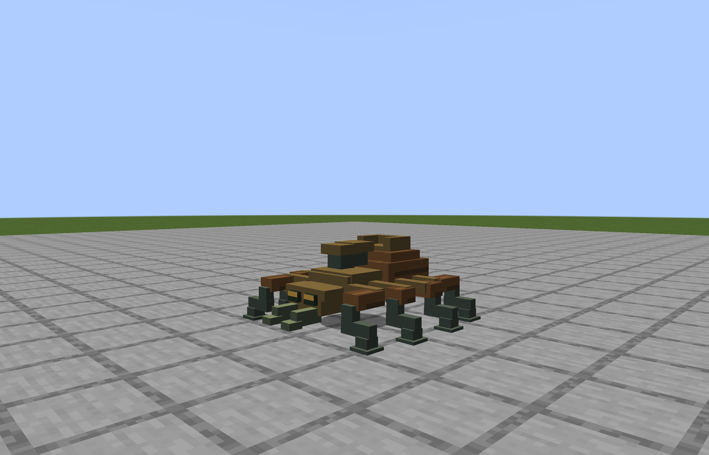
26-bazu_digongzhu-side
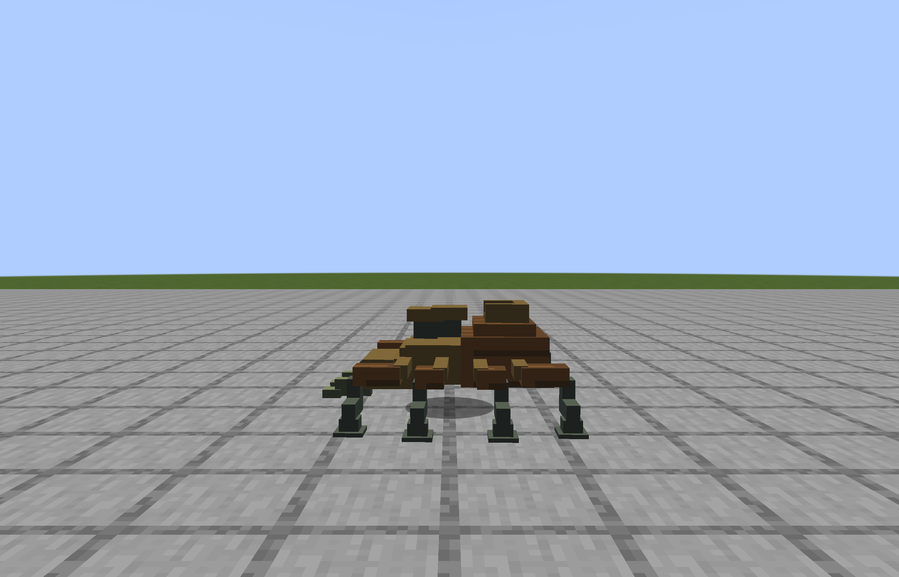
27-bazu_digongzhu-back
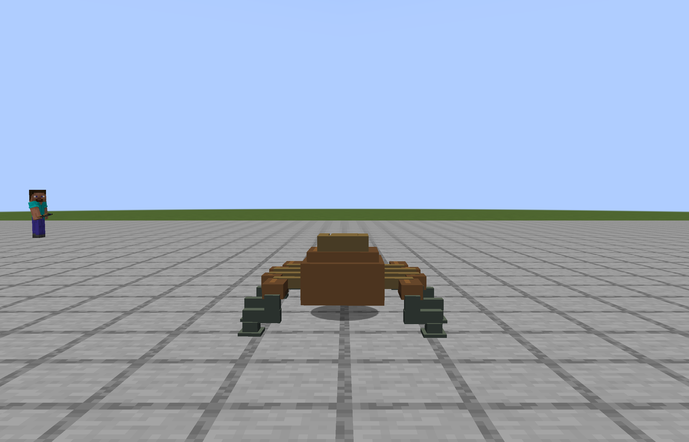
28-bazu_digongzhu-walk
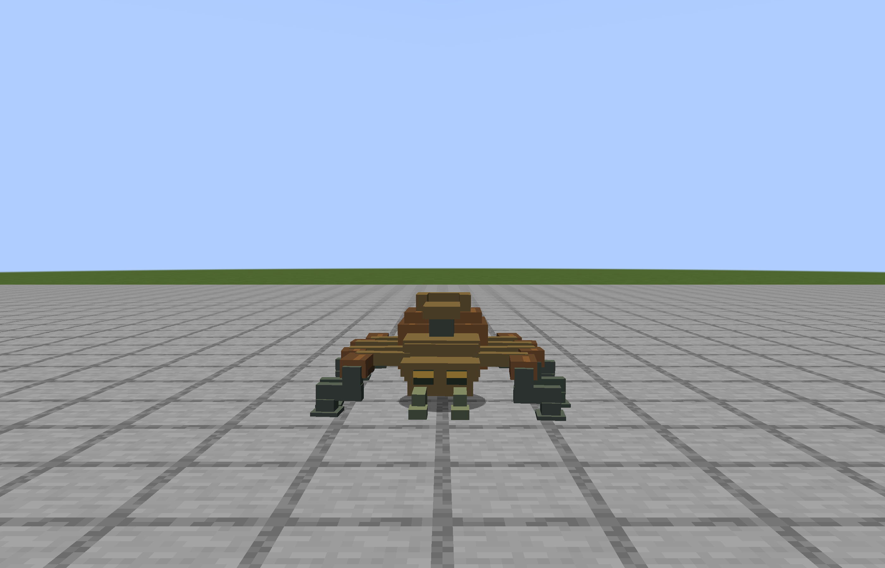
29-bazu_digongzhu-run
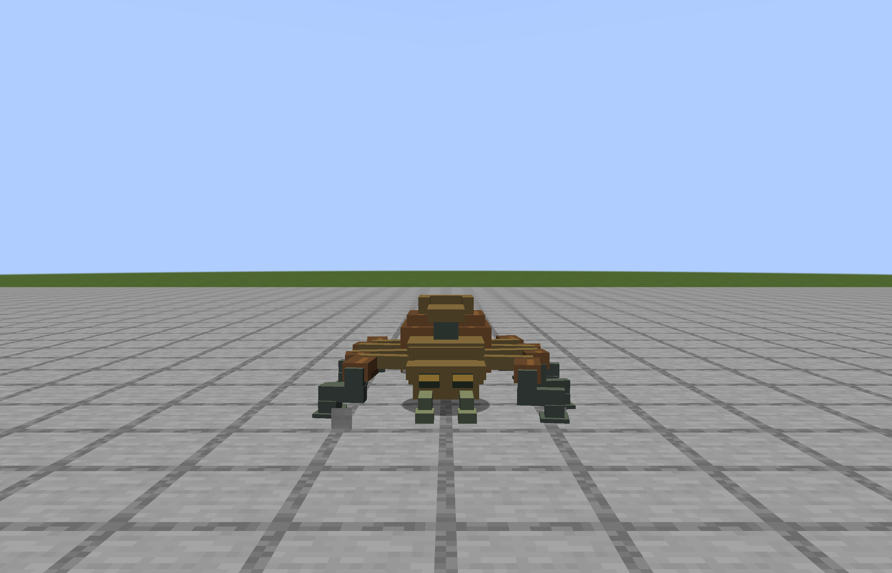
30-bazu_digongzhu-attack-tell
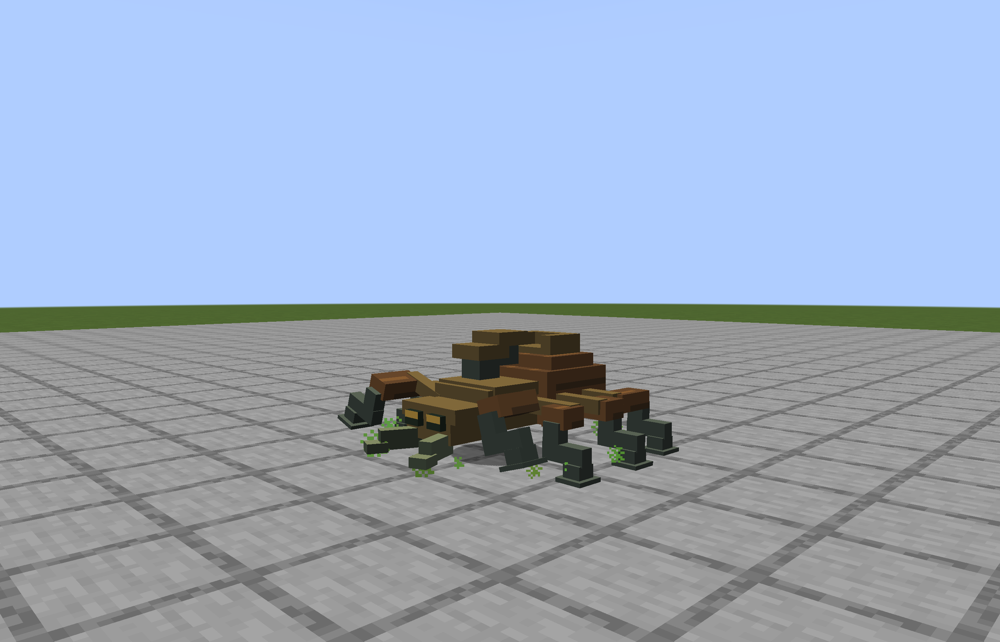
31-bazu_digongzhu-attack-contact
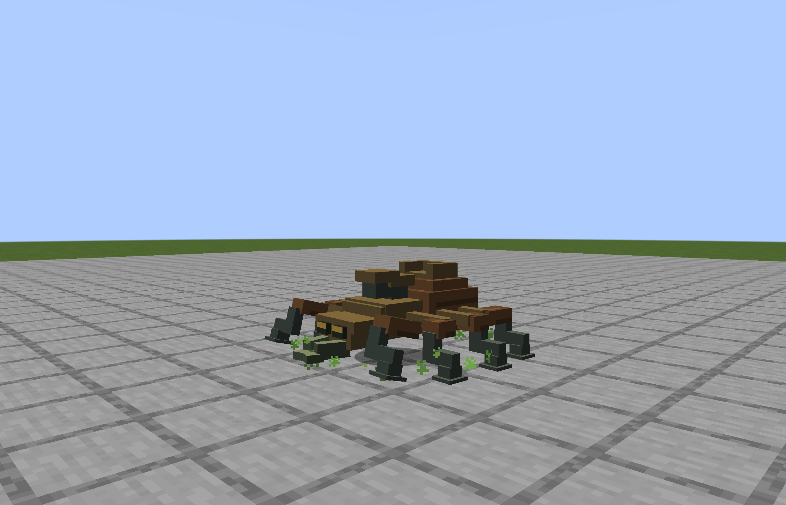
32-bazu_digongzhu-special-tell
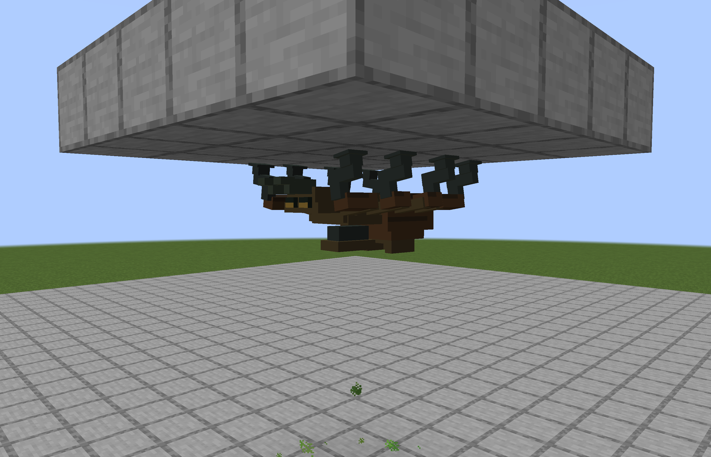
33-bazu_digongzhu-special-contact
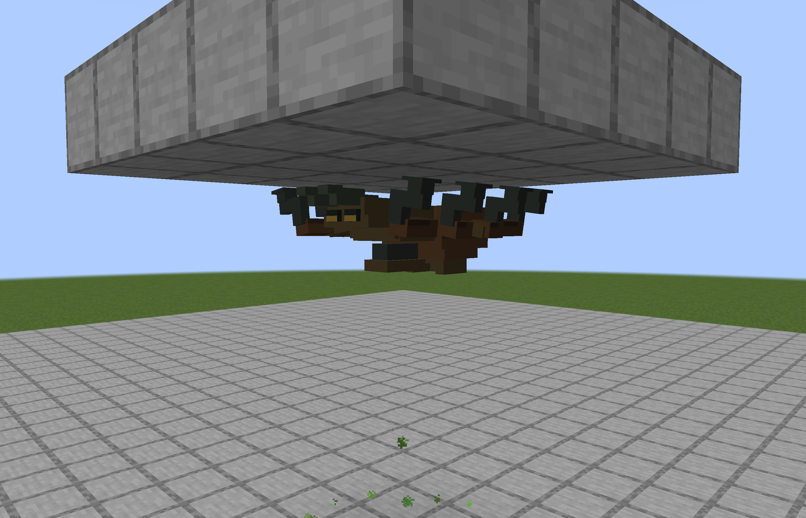
34-bazu_digongzhu-hurt
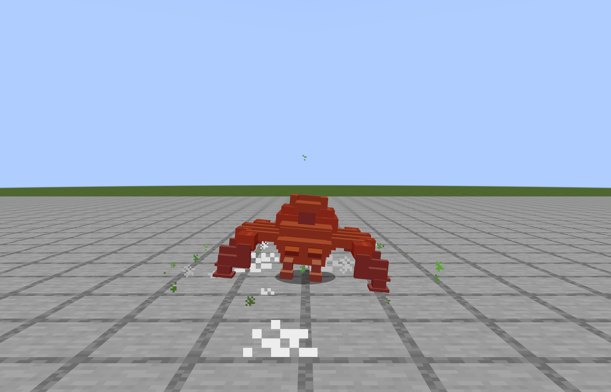
35-bazu_digongzhu-death
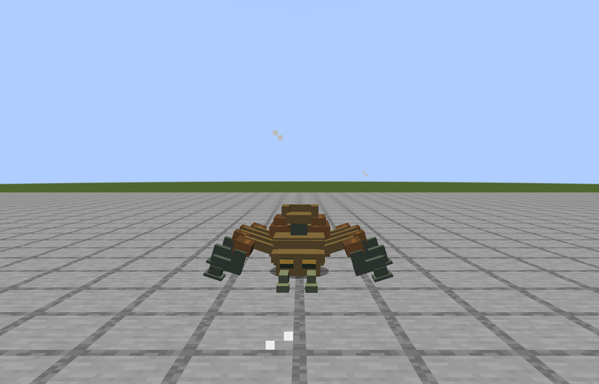